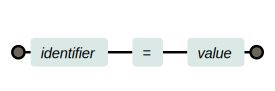
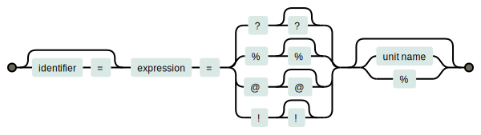
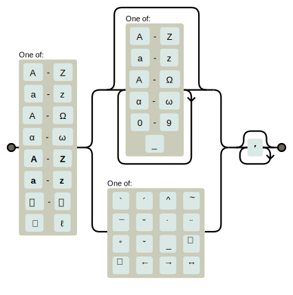
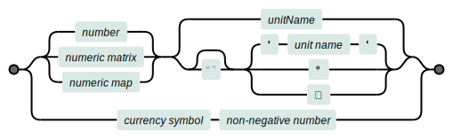
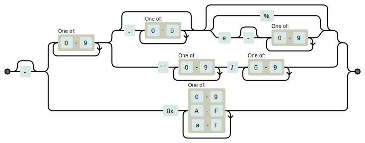
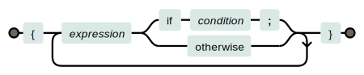
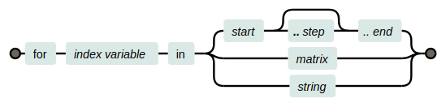

Hurmet Reference Manual
Introduction
Hurmet is a rich-text editor that gives you the ability to create high quality calculation documents using standard math notation.
Hurmet calculations are much easier to read and check than spreadsheet calculations. Hurmet does not hide the active expressions and intermediate values of a calculation. They’re all open for review in the displayed document.
You are welcome to use the Hurmet.app web page under terms of the MIT License. The source code is available in Hurmet’s GitHub repository.
Editor Basics
Hurmet provides rich-text editing capabilities. You can apply styles to a document range by selecting text, then clicking one of the menu bar buttons:
| ≡ | Navigate… |
File▾ | Open…, Save…, Import/Export to Markdown or GFM, Take a snapshot, Show diff, Set Page Size, Print |
Doc▾ | Set Decimal, Font size, Draft Mode, Print header, Delete all comments |
 | Recalculate all |
  | Undo, Redo |
B I  X2 X2 X2 X2  U U | Character styles: Bold, Italic, Code, Subscript, Superscript, Strikethrough, Underline |
 — —   ToC ToC    | Insert: Link…, Horizontal rule, Uploaded image…, Link to image…, Table of Contents…, Calculation…, TeX…, Comment… |
¶ H1 H2      | Block styles: Plain paragraph, Code block, Headings, Centered paragraph, Indent, List, Ordered list, Block quote |
         Tbl Style Tbl Style | Table: Insert table, Insert row, Insert column, Delete table, Delete row, Delete column, Toggle cell merge, Align left, Align center, Align right, Set table style |
 Q Q | Information, Quick Reference |
Save/Open
You can save your work using Ctrl-S or the save command in the File menu. Then reopen it using the File | Open… menu choice. In Chrome and Edge, the save button is smart enough to re-save your work to the same file you opened earlier. In Firefox and Safari, the save button always works like a Save As… button.
Tracking Changes
The File… menu contains commands that enable you to track changes:
- Take a snapshot… will store a snapshot of the current document (not including embedded images)
- Show diff… will display the differences between a chosen snapshot and the current document.
- Delete all snapshots…, for when you no longer need to track changes.
Snapshots and diffs are displayed in Markdown format.
Print Header
You can create a print header in any document by clicking the File | Print Header menu choice. Later, when you click the File | Print… menu choice, the header will be printed at the top of every page (except the cover page). The header is a table and it should remain a table. Otherwise, edit it any way you want.
If you write $PAGE into a print header, Hurmet will print page numbers at that location.
Comments
The button enables you to write a comment regarding the nearby text. The comment will look like this:
Comments can be styled with Markdown inline styles: _italic_, **bold**, `code`, ~subscript~, ~~strikethrough~~, $$, and ¢¢.
Table of Contents
The ToC button creates a Table of Contents at the selection point. The table will be built from Headings in your document. In the ToC dialog box, you can choose which heading levels to include.
Markdown
In the File▾ menu, you can import or export files in Markdown, a lightweight markup format. Hurmet's version of Markdown is extended to enable calculations, indented paragraphs, centered paragraphs, and tables with merged cells or multiple paragraphs in a cell.
Click for more…
Hurmet-flavored Markdown
Paragraphs and lists are preceded by a blank line.
A newline is indicated by a backslash, \, at the end of a line.
| Type… | To get… |
|---|---|
_Italic_ | Italic |
**Bold** | Bold |
~subscript~ | subscript |
~~strikethrough~~ | |
`inline code` | inline code |
¢calcu = la/tion¢ | |
$\TeX$ | |
# Heading 1 | Heading 1 |
## Heading 2 | Heading 2 |
[Link](http://a.com) | Link |
[Link][] ⋮ [Link]: http://a.com | Link |
 | |
![image[] ⋮ [image]: http://url/image.svg | |
> Blockquote | | Blockquote |
* List* List* List | • List • List • List |
1. One2. Two3. Three | 1. One 2. Two 3. Three |
| |
i> indented block | indented block |
C> Centered block | Centered block |
Begin a line with ***** to get a horzontal rule.
Pipe Tables
| Head 1 | Head 2 | Head 3 |
|---------|----------|---------|
| datum 1 | datum 2 | datum 3 |
| datum 4 | datum 5 | datum 6 |Grid tables
+----------+---------------+---------+
| Head 1 | Head 2 | Head 3 |
+==========+===============+=========+
| datum 1 | merged cell |
+----------+---------------+---------+
| datum 2 | 1st paragraph | datum 3 |
| | | |
| | 2nd paragraph | |
+----------+---------------+---------+
…or you can export GFM (Github Flavored Markdown), which does not have Hurmet’s extensions and which converts calculation zones to TeX.
TeX
Besides its calculation cells, Hurmet also has cells that emulate the math mode of (pronounced tech). These cells display, but do not calculate, math. You can create a TeX cell by clicking the button. Type Enter to save the cell.
To create a cell in TeX display mode, first change the paragraph format to center-justified, then create the cell.
For more information about TeX and LaTeX, good places to start are the Wikibooks pages for writing math and advanced math; and the Temml home page and supported-functions page.
Hurmet calculation cells use a different syntax than TeX. In calculation cells, the syntax is more akin to a programming language, yet it renders like mathematics.
And now, on to the main event, Hurmet’s calculations.
Calculation Tutorial
- Create a cell
Hurmet calculation cells display math and perform numeric calculations. To create a calculation cell in Hurmet.app, select a spot in the document, then click the
button or type Alt c.While in a cell,
Enter will close and update the cell.
Shift-Enter will create a newline inside the cell.
Esc will close the cell without updating it.
Clicking elsewhere will also close the cell.- Statements
Inside a calculation cell, we can write an statement and get a numeric result. In the demonstration box to the right, try replacing the text with
2 + 2 = ?. Hurmet will render the math and write the result where you place the?mark.- Numbers
Numbers can be written as integers (33), decimals (2.45), or mixed fractions (3 ⁷⁄₈). There is a more detailed description below.
- Arithmetic
The symbols:
+ - × / ^ √are some of Hurmet’s arithmetic operators. Try an equation such as2 × 4 + 3^2/7 = ?. Play with changes to the values and operators to see how they work. See here for more operators.- Multiplication
Hurmet accepts several multiplication syntaxes. If , then the following all give the same result:
To obtain the character , type xx and hit the space bar. Auto-correct will give you an .
A space between variables acts as a multiplication operator.
- Roots
Type
sqrtand hit the spacebar to auto-correct intoroot 3androot 4will also auto-correct into roots.- Function
Hurmet treats a word as a function name if it is placed directly before an open parenthesis. Example: . Hurmet has many built-in functions.
- Variables
← That kind of statement will assign a value to a variable. Subsequent cells can then use the variable.
Example:2 L = ?will result in:A variable name must be a valid identifier.
An assignment statement can also contain a calculation expression. Example:
b = 2 L = ?will result in- Subscripts
An underscore signals the beginning of a subscript. Examples:
x_leftandy_(i+1)result in and .- Exponents
A carat signals the beginning of an exponent. Examples:
x^23andy^(i+1)result in and- Greek letters
To write a Greek letter, write the name of the letter and hit the space bar. So,
alpha↦ α andbeta↦ β. More detail here.- Accents and Primes
To write an accent above a single-letter variable, write the accent name and hit the space bar for an auto-correction. Examples:
y bar↦θ hat↦P vec↦x dot↦More detail here.
To write a prime, type two apostrophes (aka single quotation marks) and hit the space bar. So,
f''will result in- Units
After a number, write a Hurmet unit between two single quotation marks, like this:
5 'meters'. Or, prepend a currency symbol to a number, e.g.$30.- Unit-Aware Calcs
Hurmet can automatically handle unit conversions of quantities. To call for a unit-aware calculations, write
??instead of?where you want the result to appear. Example:2 × 3.1 'm' = ?? ftresults in .This is covered in more detail below.
- Result Rounding
To specify how results are to be rounded, use the format statement. Examples:
format = "f2"fixed to 2 places after decimal.format = "r3"rounded to 3 significant digits.format = "h3"like "r3", but doesn’t round integers.
More details below.- Display Mode
Display mode centers a calculation cell and enlarges summation symbols and integration symbols. To get display mode, first set a paragraph to centered, then create the cell.
Quick Reference
Markup
| Input | Renders as: | Input | Renders or calculates as: |
|---|---|---|---|
12/25.2 | x | ||
(a + b)/c | longVarName | ||
a//b | "A string." | ||
a///b | 5 'N.m/s2' | ||
x^23 | (a, b; c, d) | ||
x^(a+b) | [a, b; c, d] | ||
x_subscript | {:a, b; c, d:} | ||
x_(a+b) | [1..4] = ? | ||
x′ | [1..2..5] = ? | ||
|x| ‖x‖ | {a if b; c otherwise} | ||
A-->note B |
| ||
\red("ng") |
Calculation cells also support many of the math-mode TeX functions supported by Temml. Put function arguments between parentheses, not braces, as in \cancel(5) instead of \cancel{5}.
TeX functions are provided for use in displaying math. Not all of them are valid in calculations.
A few color functions are valid in calculations, but only if their argument is a string. These are: \blue, \gray, \green, \orange, \pink, \purple, and \red.
Auto-correct
Auto-correct kicks in when you type a space.
| Type | Get | Type | Get | Type | Get | Type | Get |
|---|---|---|---|---|---|---|---|
| xx | × | sqrt | √ | Gamma | Γ | alpha | α |
| . | · | root 3 | ∛ | Delta | Δ | beta | β |
| ' ' | ′ | x^2 | x² | Theta | Θ | gamma | γ |
| oo | ∞ | bb M | 𝐌 | Lambda | Λ | delta | δ |
| ooo | ° | bbb E | 𝔼 | Xi | Ξ | epsilon | ε |
/// | ∕ | cc P | 𝒫 | Pi | Π | zeta | ζ |
<= | ≤ | \ceil | ⎾⏋ | Sigma | Σ | eta | η |
>= | ≥ | \floor | ⎿⏌ | Phi | Φ | theta | θ |
!= | ≠ | << | ⟨ | Psi | Ψ | iota | ι |
<> | ≠ | >> | ⟩ | Omega | Ω | kappa | κ |
| ~= | ≅ | ^^ | ∧ | y bar | y̅ | lambda | λ |
| ~~ | ≈ | vv | ∨ | θ hat | mu | μ | |
| \in | ∈ | vvv | ⋁ | P vec | nu | ν | |
| \notin | ∉ | nn | ∩ | P harpoon | xi | ξ | |
| -= | ≡ | nnn | ⋂ | a dot | ȧ | pi | π |
| := | ≔ | uu | ∪ | a ddot | ä | rho | ρ |
| -: | ÷ | uuu | ⋃ | a grave | à | sigma | σ |
| +- | ± | \checkmark | ✓ | a acute | á | tau | τ |
| -+ | ∓ | \o | ø | a tilde | ã | upsilon | υ |
-> | → | \not | ¬ | a ring | å | phi | ϕ |
<- | ← | \xor | ⊻ | AA | ∀ | chi | χ |
<-> | ↔ | \sum | ∑ | EE | ∃ | psi | ψ |
=> | ⇒ | \int | ∫ | CC | ℂ | omega | ω |
| \circ | ∘ | \iint | ∬ | HH | ℍ | \hbar | ℏ |
| ||| | ¦ | ii | NN | ℕ | \ell | ℓ | |
| || | ‖ | OO | ℚ | \euro | € | ||
| /_ | ∠ | \c | ¢ | RR | ℝ | \yen | ¥ |
| ZZ | ℤ |
The font corrections, e.g., bb … work on any letter from A to Z or a to z.
-->, <--, and <--> will auto correct into extensible arrows, as in: .
\<space> auto-corrects to ˽ in the text editor, which renders as a space.
Display Selectors
| Display selector | Display Selector for Unit-Aware Calculation | Displays: |
|---|---|---|
| ? | ?? | Entire calculation, including the result and a blue echo of the expression displaying the value plugged in to each variable. |
| % | %% | Omits blue echo. |
| @ | @@ | Displays only the result, like a spreadsheet cell. |
| ! | !! | Omits the blue echo and the result. Valid only when the result is a data frame. |
Accessors
| Data Type and Example | Accessor | Returns |
|---|---|---|
| string s = "abcde" | s[2] s[2..4] s[3..] | b bce cde |
| Vector 𝐕 = | 𝐕[2] 𝐕[2..4] 𝐕[3..] | 2 |
| Matrix 𝐌 = | 𝐌[2, 3] 𝐌[3,] 𝐌[2..3, 1..2] | 6 |
Data Frame | DF.B DF["B"] DF.area DF.B.area DF["B"].area DF["B", "area"] DF.w[1] | An entire row An entire row Column vector 22 22 22 4 |
Dot notation can be used only if the property name is a valid identifier.
Calculation Forms
Hurmet calculation cells don’t just display math; they compute numerical results.
It’s quite simple to assign a value to a variable:
| Form | Examples |
|---|---|
|  | x = 5 |
L = 3.1 'm' | |
w = 100 'lbf/ft' | |
| name = "James" |
To calulate an expression that contains a variable, a function, or an operator; write a ? or % or @ to indicate where the result should appear. Here are some examples:
| Input | Renders as: |
|---|---|
2 + 2 = ? | |
2 + 2 = @ | |
A = 2 × 4 = ? | |
x = 2 A = ? | |
x = 2 A = % | |
A = 2 'm' × 4 'feet' = ?? m² |
The statement form is more precisely defined as:

At the beginning of the statement, you can write an optional variable name. The result of the calculation will be assigned to that variable. Expressions later in the document can call the variable. Variable names must qualify as valid identifiers. They are case-sensitive and bold-sensitive. A search for variable E will not find e. A search for M will not find M.
You can define a unit for the result with a leading currency symbol or a trailing unit name, but not both in the same statement.
You can also slip in a ; character just before the final = sign in a statement. That will create a multiple line statement, with aligned = signs.
Display Selector
Near the end of the statement is the display selector, i.e., ?, ??, etc. It determines how much of the calculation is displayed.
| Display selector | Display Selector for Unit-Aware Calculation | Displays: |
|---|---|---|
| ? | ?? | Entire calculation, including the result and a blue echo of the expression displaying the value plugged in to each variable. |
| % | %% | Omits blue echo. |
| @ | @@ | Displays only the result, like a spreadsheet cell. |
| ! | !! | Omits the blue echo and the result. Valid only when the result is a data frame. |
For an engineer like me, the most common display selector is ??. I almost always want to see the entire calculation. Seeing the expression and the plugged-in values helps me to avoid the kind of unseen errors that creep into spreadsheet calculations. And it makes the calculation reviewable by a second set of eyes.
A doubled selector will prompt a unit-aware calculation. After you try them, you may wonder how you ever did without them.
I use the ! selector mostly when I am assigning a chunk of data to a variable.
I try to resist the temptation to overuse the % selector. When I review work done by another engineer, I can do without the blue echo if variable values are assigned directly above the equation where they are used. Otherwise I get grumpy. You don’t want a grumpy reviewer.
One last variation is possible when assigning values from a single-row data frame. You can assign such values to more than one variable at a time, like this:
A, I, w_self = beam["A", "Ix", "weight"] = !!Identifiers
Variable names and function names must be written in the form of a valid identifier.
- Identifiers may be multiple characters long.
- The first character must be a letter from the Latin or Greek alphabet. It may be bold or capitalized calligraphic Latin, or ℏ, or ℓ.
- Subsequent characters may be letters or numerals (0123456789).
- An under-score within an identifier is allowed and will be interpreted to mean the start of a subscript.
- If an identifier has only one letter, then an accent character may be written after it. Hurmet will render the accent above the letter, as in .
- Primes may be appended to the very end, as in: .
- The following keywords may not be used as variable names:
π,j,ℏ,true,false,root,if,else,otherwise,end,and,or,modulo,in,to.

The names of those accents are:
| grave | acute | hat | tilde |
| bar | breve | dot | ddot |
| ring | check | ul | leftharpoon |
| harpoon | leftvec | vec | leftrightvec |
Hurmet’s auto-correct can help create identifiers.
| To create: | … do this and hit the space bar | Example input | Example result |
|---|---|---|---|
| Greek letter | Type the name of the letter. | gamma | γ |
| Capital Greek letter | Capitalize the name’s first letter. | Gamma | Γ |
| Bold letter | Type “bb”, then space, then the desired letter. | bb M | 𝐌 |
| Calligraphic capital letter | Type “cc”, then space, then the desired letter. | cc P | 𝒫 |
| Accent | Type the name of the accent. | y bar | |
| Prime | Type two apostrophes. | '' | ′ |
Hurmet will render single Latin letter variable names in italic. Function names and multi-letter variable names are rendered in upright font. As a convention, I personally use bold letters for variables that contain vectors or matrices.
Data Types
- Boolean
trueorfalse- String
A string literal is a string of text characters enclosed by a pair of straight double quotation marks. The string may include any Unicode character except a straight double quotation mark, a newline, or a carriage return.
"This is a string."You can call a subset of any string with an index or range in brackets. Hurmet indices are one-based. Examples:
a = "abcdefg" a[2] # returns "b" a[2..4] # returns "bcd" a[5..] # returns "efg"Math String
Strings will be rendered as math if they are delimited with single backticks instead of double quotes. So somthing like
`M_n`will return as . This is useful mostly when a calculation checks a condition and reports whether some computed variable can be accepted.- Number
Enter as integers (33), decimals (2.45), percentages (3.2%), scientific notation (3.1e4), mixed fractions (3 ⁷⁄₈) or hexadecimal (0x2A).
- Complex Number
One can write a complex number in two forms:
The letter “” is identical to by Hurmet definition. Be sure to write a space after .
The characters
/_will auto-correct into ∠ and is in radians.
Also, the character ° is now a unit name. So one can also write a polar notation as and the phase angle will be unit-aware. The characters
ooowill auto-correct into °Examples:
- Unit
A Humet unit can be applied to a numeric value. There are three ways to write a Hurmet unit.
- A unit name between apostrophes, aka single straight quotation marks, written after a numeric value.
- A unit symbol written after a numeric value.
- A currency symbol written before a non-negative number.
Input Renders as 4.2 'meters'30°$25.1010 'N·m/s'[2.1; 15.3] 'feet'
A Hurmet treats the number and the unit together as a single quantity. Quantities are useful in unit-aware calculations which do automatic unit conversion and also check for unit compatibility.
Hurmet has many built-in unit definitions. You can write any one of them into a quantity. SI (metric) prefixes are valid on the appropriate unit names.
You can also create compound units on the fly. That is, you can raise any unit to a power, and these powers-of-units can be multiplied (or divided) together into products. Example:
Input Renders as 4 'kW.hr/m2'Note that within the unit literal, it is not necessary to write
^to indicate a numeric exponent. Also, a dot or a hyphen within a compound unit name will be rendered as a half-high dot.Only one division solidus, /, may be written into a compound unit.
- Matrix
A Hurmet matrix is a one or two dimensional arrangement of matrix elements. A Hurmet matrix element can be a number, a string,
true,false, or an exprression that resolves to one of those simple types.A Hurmet vector is a one dimensional matrix, either a row vector or a column vector.
A matrix literal is written between delimiters, either
( )or[ ]or{: }. Matrix elements are separated by commas. Matrix rows are separated by semi-colons. Be sure to write a space after comma separators so they are not confused with decimals inside a number. Here are some matrix examples:Input Renders as (1, 0; 0, 1)[2.1; -15.3]{:1, 0; 0, 1}Another way to create a Hurmet vector is to write a range of numbers between brackets; the form is
[start:step:end]. A Hurmet calculation of that form will return a row vector with every number in the range. The step size is optional (default = 1). Examples:Input Result [2..5] = ?[1..2..5] = ?You can call individual elements with index integers between brackets, as in
𝐕[5]or𝐌[1, 3]. You can use a variable name for the index if the variable returns an integer.You can access a sub-matrix using the range operator, “..”, as in
𝐌[2..5, 1]. Entire rows or columns can be called by omitting an index, as in𝐌[2,]or𝐌[,1]. Hurmet indexes are one-based.To write a numeric interval instead of a matrix, write the same thing, but with no spaces:
[1,2,3…10]- Matrix Operations
All the usual math operators can be applied to a numeric matrix. The operators mostly work in an element-wise fashion. If you add a scalar to a matrix, or pass a matrix to most functions, Hurmet will do an element-by-element calculation and return a matrix, as in:
Spreadsheet calculations can often be replaced by calulations using vectors, as above. When you really need to get things right, it’s great to be able to see the expression and all the plugged-in values.
Multiplication of two matrices is different than other operations. Mathematicians have several ways to multiply matrices. In Hurmet, you choose the type of multiplication by your choice of multiplication operator:
↦ element-wise product,
↦ cross product of a pair of three-vectors =
↦ dot product =
Here are more of Hurmet’s matrix operations:
↦ a transposed matrix.
↦ an inverted matrix, if is square.
↦
↦ element-wise absolute values
↦
↦ concatenate 𝐀 and 𝐁 horizontally
↦ concatenate 𝐀 and 𝐁 vertically
Functions will mostly work element-wise on an matrix. Exception: functions
min()andmax()will find the minimum or maximum of the elements in the matrix.If you want to write a comma or a semi-colon inside parentheses and not create an matrix, use
\,or\;.- Data Frame
A data frame is a two dimensional data structure that can be accessed with row names and column names or by row indices and column indices.
Each datum can be a number, a string,
true, orfalse. A missing item will be taken to beundefined. All data in a column must be of the same data type. A column of numbers can be assigned a unit of measure.Data frame literals are written between double backtick delimiters. The text between the backticks must be written in CSV format. (CSV once meant comma-separated values.)
Instead of commas, Hurmet data is separated by either tabs or pipes, i.e.,
|. (But not both tabs and pipes in the same file.) Numbers must use a dot decimal. The second row may contain units of measure.Here’s an example of CSV input:
rebar = ``|diameter|area |in |in² #3|0.375 |0.11 #4|0.5 |0.2 #5|0.625 |0.31 #6|0.75 |0.44``… which renders as:
Hurmet will use the first column as keys to the rest of each row if you leave the top left cell blank, or if the content of the top left cell is “name” or “item”.
A dataframe literal can also show totals on the bottom line, via the
sumAbove()function. So this input:roof = ``Item | weight | psf 2 layers asphalt shingles | 8.0 1/2 inch plywood | 1.5 insulation, R19 fiberglass | 0.6 trusses at 16 inch o.c. | 2.5 5/8 inch gypsum board | 2.5 lights, HVAC, miscellaneous | 1.5 total | sumAbove()``will render like this:
Data frames can be quite large, so Hurmet has a
fetch(url)function to load data from a remote CSV file into a data frame. Since Hurmet runs in a browser, the url must begin withhttp:orhttps:A fetch example:
wideFlanges = fetch("https://hurmet.app/example.csv") = !That example loads in this data:
As data frames go, that example is still pretty small. When I assign a data frame to a variable, I usually suppress its display by using the ! display selector.
I use a data frame most commonly by calling a row from it, like this:
beam = wideFlanges.W10X49 = !!orbeam = wideFlanges["W10X49"] = !!That returns a single-row data frame. Then I can call individual properties, like this:
A = beam.A = ?? in2orA = beam["A"] = ?? in2orA = wideFlanges.W10X49.A = ?? in2Hurmet will return a
Dot notation, as in
wideFlanges.W10X49, can be used only if the property name is a valid identifier.Here are calls that can return multiple values:
A, S_x = wideFlanges.W8X31["A", "Sx"] = !!, or
A, S_x = wideFlanges["W8X31"]["A", "Sx"] = !!Multiple returns must use the!!display selector, for now.If the data frame has only one row of data, a single accessor will call a datum.
Say the data frame is Then one can callNumeric cata frames can be multiplied by a unit-less scalar. No other math operations are supported for data frames.
For structural engineers, I’ve put some useful data frames on GitHub. There are links below.
- Map
A Hurmet map is a single-row data frame in which every value is the same data type, either boolean, string, or number. Maps can be the numeric part of a quantity.
You can do arithmetic on maps and run them through functions. The operation will be done on each value in the map. For instance, a beam calculation can break the loads down into dead load, live load, snow load, etc.:

Notice that a number literal must begin and end with a numeral, not a decimal symbol. Hurmet will not recognize 5. as a number.
Hurmet’s default decimal symbol is a dot. You can choose instead to enter numbers with a decimal comma via a drop-down menu in the Doc menu. Numbers are never entered with a thousands separator, but they can be displayed with one.
Hurmet always saves a decimal symbol as a dot. It’s only the display that changes.
While calculations are underway, Hurmet holds every number in memory in rational number format. The numerator and denominator are each integers of arbitrary length. So Hurmet can work precisely with numbers like 0.1 and 0¹⁄₃. Trignonometry and roots are done in double-precision floating point, good to about 15 significant digits.
Expressions
Hurmet calculations are meant to be recognizeable to anyone familiar with standard math notation. That is a broad statement. Here are many nuances:
Constants
- π
If you write into an expression, Hurmet uses a value of 3.1415926535897932384626433832795028841971693993751.
- e
Hurmet will treat just like any other variable most of the time. But if is the base of an exponent, for example: , then Hurmet will take to mean 2.7182818284590452353602874713527.
- j
= .
- ℏ
For ℏ, Hurmet uses a value of 1.054571817 × 10⁻³⁴ J·s.
Operators
| Operator | Example | Description |
|---|---|---|
| = | x = 15 | Assign a value to a variable. |
| if x = 15 | Equality test if in a comparison position. That is, “=” tests for equality if there is something other than a identifier to the left of it or a display selector to the right of it. | |
| + | 2 + 2 | Addition |
| – | 5 - 3 | Subtraction |
| - | Unary minus | |
| * | Multiplication of numbers. Element-wise product of matrices. | |
| × | 2 × 4 | Multiplication of numbers. Cross product of three-vectors. auto-correct: xx |
| · | Multiplication of numbers. Dot product of matrices. auto-correct: dot between two spaces. | |
| Multiplication | ||
a b | Multiplication. (A space acts as an operator when between variables.) | |
| Multiplication | ||
| Not a multiplication if no space. Hurmet reads “a2” as an identifier. | ||
| Function | ||
| a (2) | Multiplication if a space exists before the open paren. | |
| / | Division | |
| // | Case fraction | |
| /// | Division displayed inline | |
| ÷ | Inline division auto-correct: -: | |
| ^ | Exponent | |
| ^* | Complex conjugate | |
| & | Concatenate strings or vectors, or append numbers onto vectors, or variables into a map, or append a column vector to a data frame | |
| &_ | Append matrices or vectors vertically. | |
| √ | Square root auto-correct: sqrt | |
| nth-root auto-correct: root n | ||
| || | Absolute value of a scalar, determinant of a matrix, or magnitude of a vector or a complex number. | |
| || || | if the argument is a vector of reals | |
| if the argument is a 2-D matrix | ||
| ⌊ ⌋ | Floor. Always rounds down. auto-correct: floor | |
| ⌈ ⌉ | Ceiling. Always rounds up. auto-correct: ceil | |
| % | Percent | |
| ‰ | Per thousand | |
| ! | Factorial precision = | |
| modulo | 10 modulo 5 | Always returns a positive remainder. |
| (5 \atop 3) | Binomial coefficient. | |
| = | Equality comparison | |
| ≠ | Inequality comparison auto-correct: != or <> | |
< | ||
> | ||
| ≤ | auto-correct: <= | |
| ≥ | auto-correct: >= | |
| ∈ | Is an element of a matrix or is a character of a string, or is a property of a single-row data frame auto-correct: \in | |
| ∉ | Is not an element of auto-correct: \notin | |
| ⋐ | Is a proper subset of auto-correct: \Subset | |
| and | if a and b | Logical and |
| or | Logical or | |
| ∧ | Logical and. auto-correct: ^^ | |
| ∨ | Logical or. auto-correct: vv | |
| ⊻ | Logical xor | |
| ¬ | if ¬ a | Logical not |
| : | 𝐕[2..3] for i in 1..3 | Range separator |
Functions
Hurmet treats an identifier as a function name if it is placed directly before an open parenthesis. So a term like is a function.
Hurmet’s built-in functions are described below. Unless noted otherwise, they can operate on any real or complex number or any matrix containing real numbers.
Transcendental functions such as trigonometry or logarithms are done to 15 digits precision.
- abs(z)
Absolute value of a real number. Magnitude of a complex number.
- accumulate(𝐕)
Takes a vector, 𝐕, and returns a new vector whose elements are each the sum of the preceding elements in 𝐕.
Example:- acos(z), asin(z), atan(z), asec(z), acsc(z), acot(z)
Inverse trigonometry functions. One can also call an inverse trigonometry function with a superscript, as in .
- atan(x, y)
When atan is called with two arguments, it returns an angle in the proper quadrant. Given a point defined by real coordinates x and y, atan returns the angle between that point and the positive x-axis of a plane. Real numbers only.
- argument(z)
Phase angle of a complex number.
- chr(n)
Takes an integer as a argument, treats it as a Unicode code point, and returns the corresponding string character.
chr(34)returns a double quotation mark.- cos(𝜃), sin(𝜃), tan(𝜃), sec(𝜃), csc(𝜃), cot(𝜃)
Trigonometry functions.
The trig functions listed above will assume that a real argument is in radians unless you tell it otherwise. You can tell it otherwise by just writing in a unit, as in:
tan(45°)and running a unit-aware calculation.Complex numbers are also valid arguments.
A positive integer written as a superscript after a trig function name will return the function result raised to a power.
So that: .A superscript -1 indicates an inverse function. In other words, .
Three functions:
sin,cos, andtan, do not require parentheses around their arguments.- cosd(𝜃), sind(𝜃), tand(𝜃), secd(𝜃), cscd(𝜃), cotd(𝜃)
The trigonometry functions listed just above will assume that the argument is in degrees. Real numbers only. Hurmet will subscript the “d” for you.
- cosh(z), sinh(z), tanh(z), sech(z), csch(z), coth(z)
Hyperbolic functions or real or complex numbers. Notation for inverse functions is similar to trigonometry.
- count(str, pattern)
The number of times string pattern occurs in string str.
- dataframe(a, b, …)
Takes vectors as arguments and returns a dataframe.
- exp(z)
- fetch(url)
Fetches the contents of a remote file. It expects the file to be in CSV format and will return a data range. Fetch functions must be stand-alone expressions.
- gcd(m, n)
Greatest common divisor of two integers.
- hypot(x, y)
…done in a way that avoids overflow. Real numbers only.
- Im(z)
Imaginary part of a complex number.
- isNaN(x)
Indicates if the argument is not numeric.
- length(a)
The length of a string or the number of elements in a matrix or vector.
- lerp(X, Y, index)
Linear interplolation. Locates real index within the vector X and returns a real number interpolated from the vector Y. X must contain values in ascending order. Real numbers only.
- log(z), ln(z)
Natural (base e) logarithm of real or complex number z.
- log10(x)
Base 10 logarithm. Real numbers only. Hurmet will subscript the numerals for you.
- log(b, x)
Base b logarithm. Real numbers only.
- logFactorial(n)
Returns the natural logarithm of the factorial of the argument. Valid only for non-negative integers. Note that
log(n!)is a valid alias forlogFactorial(n). Real numbers only.- logΓ(x)
Returns the natural logarithm of the Gamma function, Γ(x). For now, Hurmet's logΓ(x) function only works on positive rational numbers.
- matrix2table(matrix, rowNames, columnNames)
Returns a data frame with the contents of the matrix. rowNames and columnNames must each be a vector of strings.
Minimum or maximum of a list or array. Real numbers only.
- random()
A pseudo-random number in the range from 0 to 1 (inclusive of 0, but not 1). Good for Monte-Carlo modeling. Not sufficiently random for crypto.
- Re(z)
Real part of a complex number.
- round(x, spec)
Rounds a real number x.
To round to an integer, omit the spec.
To round to n significant digits, write the spec as "rn", e.g., "r3".
To round to n places after the decimal, write the spec as "fn".- sign(x)
Returns
Real numbers only.- string(x, spec)
Takes a number, x, and returns a string. spec is a rounding specification. It can round to a fixed number of digits after the decimal, e.g., "f2", or round to a specified number of digits, e.g., "r3".
- sum(a, b, c, …), product(a, b, c, …), length(a, b, c, …), range(a, b, c, …), mean(a, b, c, …), variance(a, b, c, …), stddev(a, b, c, …)
Functions that accumulate a result from a list of arguments. Real numbers only.
- zeros(m, n)
Returns a m × n matrix filled with zeros. Real numbers only.
- Γ(z)
Gamma function
precision =
Operator Precedence
What is the result of the expression ?
It depends on whether one does the addition first or the multiplication first. So the answer could be or it could be .
To resolve this ambiguity, Hurmet performs operations with the following precedence:
| ! % | Factorials and percents are done first. |
| ^ | Then exponents, from right to left. |
| √ | Roots |
| - | Unary minus, for example: -4 |
| ∠ | To write a complex number in r∠θ notation. (Coming later this year) |
| × · / ÷ | Multiplication or division, from left to right. |
| + – & | Addition or subtraction or concatenation, from left to right. |
| < > ≤ ≥ = ≠ | Comparisons (for If Expressions) |
| ∧ ∨ ¬ ⊻ | Logical operators (ditto) |
| : | Separator for a range of integers, as in V[2:3]. |
| , ; | Argument separators or row separators for functions, matrices dictionaries, or If Expressions. |
| ( ) [ ] | All conventions are over-ridden by parentheses or brackets. |
Now let’s return to the question that opened this section. We now know that multiplication has a higher precedence than addition, so the answer to our question above is:
If Expressions
Hurmet If Expressions enable you to choose between expressions, based upon one or more conditions, as in:
This sort of expression is written between the delimiters: { } The row separator symbol is ; Hurmet will automatically align the logic words if and otherwise. So the example above can be coded this way:
β_1 = {
0.85 if f_c′ ≤ 4000 ;
0.65 if f_c′ ≥ 8000 ;
0.85 - (f_c′ - 4000)/20000 otherwise
}The spaces in that code example are not significant. Hurmet always aligns the words if and otherwise. In fact, that example could also be coded all onto one line. To be precise, the form is:

Conditions may contain logical operators: and or not ∧ ∨ ¬ ⊻
Chained comparisons are okay.
Overloading
Overloading summary. That is, Hurmet math operators and functions will work on all the data types tablulated below. They also work on a Hurmet quantity that takes any of these shapes:
| scalar | vector | matrix | map | map with vector values |
|
|---|---|---|---|---|---|
| scalar | ✓ | ✓ | ✓ | ✓ | ✓ |
| vector | ✓ | ✓ | ✓ | ✓ | |
| matrix | ✓ | ✓ | ✓ | ||
| map | ✓ | ✓ | |||
| map with vector values | ✓ |
Also, a unit-less number can be multiplied times a data frame that has numeric values.
Unit-Aware Calculations
Hurmet has a data type called a quantity that contains both a numeric magnitude and a unit of measure. In a Hurmet calculation editing box, you transform a number into a quantity literal by appending a unit name between single quotation marks. Examples:
4 'meters' | 7.1 'ft3/s' | 11 'N·m' |
Hurmet has a unit-aware calculation mode that automatically handles unit conversions on quantities and also checks that the operands are unit-compatible. You specify unit-aware mode by writing two question marks instead of one in the place where you want a result to appear. So if you open a Hurmet calculation cell and write:
4 'ft' + 3 'yards' = ?? m
… the result will render as:
You can create composite units on the fly and Hurmet will still convert them automatically.
If you try to add quantities with non-compatible units, Hurmet will return an error message:
If the calculated units are non-compatible with the units specified for the result display, Hurmet will return an error message:
If you assign a quantity to a variable, a unit-aware calculation will call the variable’s entire quantity, not just the numeric value.
If you assign a quantity to a variable, you can still call the variable from a non-unit-aware calculation. Such a calculation will call the scalar value, not the quantity.
You’re welcome to view all of Hurmet’s built-in unit definitions.
Custom Units
If the Hurmet built-in unit definitions are not sufficient, you can define a set of custom units in a single-row data frame like this:
Currencies
Currency exchange rates change, so Hurmet’s exchange rates are updated with data from the European Central Bank. That update occurs only once per week. For many purposes, such rates are insufficiently accurate, so you can override them and define your own exchange rates in a map named currencies. Such a statement might be coded like this:
The keys in that map are standard three-letter currrency codes.
The variable name currencies may not be used for any other purpose.
Traditional Units
Many traditional units have had more than one historical definition. Hurmet currently has the following default treatment of certain traditional units:
- pound is treated as a mass, not a force. (lbf and lbm are un-ambiguous alternatives.)
- psf and psi, on the other hand, are treated as force per area.
- ton is treated as a mass, and is the U.S. customary unit. I also put in a tonf, 2000 lbf.
- gallon, fl oz, pint, quart, and bushel are the U.S. customary units.
- Weights are avoirdupois, unless specifically noted as a troy weight.
- point is the adobe point = ¹∕₇₂ inch. TeX point is also available.
- barrel and bbl are an oil barrel = 42 US gallons.
If you are curious about some of the more unusual units, such as “survey foot” or “nautical mile”, I recommend Russ Rowlett’s dictionary of units of measurement.
Numeral display
There are two aspects to how numbers are displayed: (1) decimal separators, and (2) rounding format for results.
Decimal separator
In some countries, the usual decimal separator symbol is a dot. Other countries use a comma. Hurmet starts up with a decimal separator based upon the browser’s language setting. Hurmet also allows the reader (not the document author) to select which display they prefer. Just use the use the drop-down menu labeled “●”.
The same menu choice also selects how Hurmet displays thousands separators.
This menu choice changes nothing internally. It changes only the display. All Hurmet documents are saved with numbers that have a dot decimal and no thousands separator.
Rounding of Results
Hurmet stores numbers internally as rational numbers in arbitrary precision, but its default result display is a decimal fraction with up to 15 significant digits. You can command Hurmet to display results differently. Just write a format statement into a Hurmet calculation cell. The specified format will apply to every calculation result below that statement (until another format statement). Here’s a format statement example:
format = "f2"
That statement specifies a fixed decimal format. Results after it will display exactly two digits after the decimal. If you would rather specify the number of significant digits, I suggest one of these statements:
format = "r3"format = "h3"
"r3" will display a result rounded to exactly three significant digits. If your client freaks out because integer values have been rounded and look “wrong”, the "h3" format will round only the fractional part of a number.
That was the short explanation. Now the long one. The rounding format specification string must take the form: "TN∠", where:
| Specification Letter |
Description | Use one of: | Default |
|---|---|---|---|
| T | Type of rounding | bEefhkNnprSstx% | h |
| N | Number of digits | [0-9]+ | 15 |
| ∠ | Optional polar | ∠ ° |
Type of rounding
Let N be the number of digits specified. Then:
| Type | Description | Examples | ||
|---|---|---|---|---|
| Number | Format spec | Result display | ||
| b | Binary | 5 | b | 0b101 |
| e or E | A programmer’s version of scientific notation. Rounds to N significant digits. | 22,000 | e3 | 2.20e4 |
| E3 | 2.20E4 | |||
| f | Rounds to exactly N places after the decimal. | 3.236 | f0 | 3 |
| f2 | 3.24 | |||
| f4 | 3.2360 | |||
| h | Hurmet’s default format will round a decimal fraction to display N significant digits and omit trailing zeros, but it will not round an integer. | 31.345 | h3 | 31.3 |
| 65,809 | h3 | 65,809 | ||
| 1.1000 | h3 | 1.1 | ||
| k | Abbreviated and followed by a symbol from the SI prefixes. Rounds to N significant digits. | 22,000 | k3 | 22.0k |
| n or N | Engineering notation, i.e. scientific notation with exponents that are even multiples of 3. Rounds to N significant digits. | 22,000 | n3 | 22.0·10³ |
| N3 | 22.0×10³ | |||
| r | Rounds to N significant digits. | 31.345 | r3 | 31.3 |
| 65,809 | r3 | 65,800 | ||
| s or S | Scientific notation. Rounds to N significant digits. | 22,000 | s3 | 2.20·10⁴ |
| S3 | 2.20×10⁴ | |||
| p or % | Percentage display. “%” is fixed to exactly N places after the decimal. “p” rounds to N significant digits. | 0.2812 | %1 | 28.1% |
| 1.28 | p2 | 130% | ||
| t | Truncates to a whole number. | 31.6 | t | 31 |
| x or X | Hexadecimal | 62 | x | 0x3e |
| X | 0x3E | |||
| ∠ or ° | Polar notation of complex numbers | 2 + j 3 | h3 | 2 + j3 |
| h3∠ | 3.61∠0.983 | |||
| h3° | 3.61∠56.3° | |||
Numeric result display types f and % can be set to any non-negative integer. The significant digit display types are limited to no more than 15 significant digits.
Drawings
Hurmet’s draw environment can plot functions and render simple sketches. For a sine wave, you can open a math zone and type the following code…
draw()
title "sin x"
frame 250, 150
view -5, 5, -3
axes 2, 1, "labels"
strokewidth 2
plot sin(x), 51
text [1.6, 1.35], "sin x"
end… which will result in this plot …

Always use x as the variable of a single function. For parametric plots, use t as the variable and put the two expressions into a row vector, like the code below.
draw()
title "spiral"
frame 200, 200
view -8, 8
axes
plot [t*cos(π t), t * sin(π t)], 251, 0, 8
end… which results in this plot …
You can pass variables into a draw environment. And a draw environment can execute the same statements as a user-defined function. So you can create drawings that change dynamically in reaction to the rest of your document.
I’ll write up an example next week.
Draw environment commands
In the following list, optional arguments are written in orange.
- title "string"
Title of the drawing, for accessibility.
- frame width, height, position
width and height, in px, define the size of the drawing in the document. position can be "inline", "left", or "right".
This command must come before anything is drawn.- view xmin, xmax, yₘᵢₙ, yₘₐₓ,
This command is usually written directly after
frame. The arguments set the coordinate system. If ymin is omitted, the x-axis is placed in the middle of the picture. If ymax is omitted, the scales along the x-axis and y-axis are the same.- axes dx, dy, "labels"
Draws coordinate axes.
- grid dx, dy, "labels"
Draws a background grid.
- stroke "color"
Sets the default color for lines, paths, curves and outlines of solid figures. Can be any of the standard HTML predefined color names.
- strokewidth pixelvalue
Sets the width of lines, paths, and shape outlines.
- strokedasharray "dashpixel spacepixel"
Set a pattern of dashes and gaps for lines and paths. Default = null.
- fill "color"
Sets the default color for filling in the inside of solid figures.
- fontfamily "sansserif" | "serif" | "fixed" | "monotype"
Sets the font type.
- fontsize pixelvalue
Sets the font size in px. Default = 13.33 (~10 pt).
- marker "none" | "dot" | "arrow" | "arrowdot"
Sets the default marker symbol that is drawn at the endpoints of lines and paths. Dots are also set along the intermediate points of paths and curves.
- line [x, y; u, v]
Draws a straight line from coordinate point x, y to coordinate point u, v.
- path [x₁, y₁; x₂, y₂; …; xₙ, yₙ], "L", or "T", or [r₁; r₂; …; rₙ]
Draws a path connecting all the points in the matrix.
The second (optional) argument defines the type of line segments. "L" will draw straight segments. "T" will fit a curve to the points. A vector of numbers will define arc radii for each segment (0 indicates a straight line segment).
- curve [x₁, y₁; x₂, y₂; …; xₙ, yₙ]
Fits a quadratic bezier curve to each point.
- circle [x, y], r
Draws a circle of radius r, centered at point x, y.
- dot [x, y], "open" | "closed", "label", position
Draws a dot with an optional appended label. position can be: "above"|"below"|"left"|"right"|"aboveleft"|"aboveright" |"belowleft"|"belowright"|null
- ellipse [x, y], rx, ry
Draws an ellipse of radii rx and ry, centered at point x, y.
- arc [x, y; u, v], r or [rx, ry]
Draws an arc in anticlockwise direction from point x, y to point u, v. It will be either a circular arc of radius r or an elliptical arc of radius [rx, ry].
- rect [x, y; u, v], r
Draws a rectangle with corners at points x, y and u, v. The optional r argument defines the corner radius of a rounded rectangle.
- text [x, y], "string", position
Writes the string at a point keyed to coordinates x, y.
position can be "above", "below", "middle", "left", "right", "aboveleft", "aboveright", "belowleft", or "belowright". The default is "middle".
The string can be styled with Markdown inline styles: _italic_, **bold**, `
code`,~subscript~, and~~strikethrough~~.- leader [x₁, y₁; x₂, y₂; x₃, y₃; etc], "note"
Writes a note with an arrow pointing to a location.
- dimension [x₁, y₁; x₂, y₂; x₃, y₃; etc; xLabel, yLabel], "label" or ["label₁", "label₂", etc.]
Writes a string of dimensions. xLabel and yLabel locate the labels. The other points each define a witness line.
- plot f or [g, h], 𝑛, xₘᵢₙ, xₘₐₓ
Plots a function or a pair of parametric equations. A single function f() should be written with x as its variable. A pair of parametric equations should be written with t as their variable.
Values will be plotted from xₘᵢₙ to xₘₐₓ. n determines the number of points to be plotted. (Default = 250)
User Defined Functions
If Hurmet’s built-in functions do not satisfy your needs, it is possible to write your own functions. Example:
function multiply(a, b)
return a × b
endOther Hurmet calculation cells can then call the function:
Unlike other Hurmet assignments, user defined functions can be placed at the end of the document and still be called by other expressions.
The function can have any number of arguments, or none, separated by commas. So the form of the first line is:
The function name and each argument (if any) must be valid identifiers.
Function statements end at a line ending, unless the last character is one of: ( [ { , ; + - or the following line begins with one of: } ] )
Comments can be written after #. A space must precede the #.
Variables created inside a user-defined function are local and their values will not be available outside the function. A user-defined function returns only the result of the expression in a return statement.
If you omit any arguments when you call a function, Hurmet will fill out the argument list with values of undefined when it executes the function.
Hurmet does not support function recursion.
Code Blocks
Inside a user-defined function, Hurmet supports code blocks and some additional control words. That is, words such as if and else can control execution of a block of statements, not just one expression. Statements between the if statement and an end statement are in the block. Example:
if a ≤ b
x = a + b²
y = 2 x
endIndentation is not significant to the parser but is very useful to humans reading the code. I usually indent by three spaces.
- if else
if…else control words make the execution of code blocks dependent on a condition. Example:
if a ≤ 4000 b = 0.85 else if a ≥ 8000 b = 0.65 else b = 0.85 - (a - 4000)/20000 end- while
A while loop executes a code block repeatedly, as long as a condition holds true. Example:
while b ≠ 0 h = b b = a modulo b a = h end- for
A for loop iterates, executing a code block once with each element of a range or collection.
Examples:
sum = 0 for i in 1..10 sum = sum + i endreverse = "" for ch in "abcdef" reverse = ch & reverse end
The index variable of a for loop will iterate through each of the numbers in a range, the elements in a matrix, or the characters in a string.
- break
A loop can be terminated early via the break keyword. Example:
for i in 1..1000000 if i ≥ 2 break end end- return
A return statement terminates the function.

If the optional expression is present, the function will return its result. If not, the function will return
undefined.- raise
A raise statement terminates the function and returns an optional error message.
- echo
A echo statement writes a message to the browser’s console. You can type Ctrl Shift I to see it. Such a message can be very useful while debugging a function.

startSvg
A user-defined function can also operate as a draw envronment. To initiate a draw environement, write the following line of code into a function:
svg = startSvg()After that line is written, all the draw environment commands are valid.
Remote modules
If some Hurmet code is used repeatedly, it makes sense to write that code once and import it into other documents. Hurmet modules are text files that serve that purpose. Modules can contain functions and statements that assign literal values to a variable. Such a module would have text that might look like this:
E = 29000 'ksi'
v = [4, 6, 8]
function multiply(a, b)
return a × b
endA Hurmet document can load an entire module into one variable with a import statement. The following statement will import a file that contains the text above.
mod = import("https://hurmet.app/smallModule.txt") = !
After a module has been imported and loaded into a variable, its functions and values can be called by writing the module name and variable/function name in dot notation, as in:
E = mod.E = ?? psi
n = mod.multiply(2, 4) = ?
Imported Parameters
The Hurmet variable name importedParameters has a special purpose. It loads module values into multiple variables instead of into one variable. An example of such an import is:
importedParameters = import("https://hurmet.app/parent.txt") = !
That statement will render like this:
Such a statement is handy in a big project, where you break the calculations into several documents. Since any big project often has several common variables, you want a way to keep them synchronized. Put an importedParameters statement into each of the documents and you’re good. As an added benefit, a reviewer can see what you are doing.
Gists
Hurmet is a web app, so it can import text files only from addresses that begin with http or https. An easy way to create such a file is a Github Gist. I've written an example Gist for imported parameters:
https://gist.githubusercontent.com/ronkok/c6c564cf162008cccf03ab8afeb09a83/raw/ParentFileExample.txt
If you create your own Gists, you'll see that the addresses of the raw files are very long. If you want a permalink to your file, delete the 40 random characters after "/raw/". Github keeps a copy of every draft of your file and the random part after "/raw/" is the revision ID.
Troubleshooting
Typing lag
A big document with a lot of math may cause typing lag. You can regain speed by clicking on the Draft Mode toggle button at File | Draft mode. It will render math as plain text and omit the blue echos.
Matrix multiplication
To get element-wise multiplication of two matrices, the operator symbol must be explicitly written as *.
Gists
Hurmet can export or import a document in Markdown format. This is useful for collaboration.
Say that you have written a calculation. It’s awesome and you want to share it so that others can use it as a template. An easy way to share work is via a GitHub Gist. Then anyone can view it, download it, or comment on it. If it is in Markdown format, you can read the Gist right there on GitHub. Here’s an example.
Hurmet’s version of Markdown adds some extensions that GitHub does not recognize, such as calculation cells, indented paragraphs, and merged cells in tables.
Coming Attractions
- Image captions
- A
distributiondata type, to enable calculations with uncertainty - A
datedata type - Permalinks
Other Resources
Civil and structural engineers may also find these items useful:
- Beam Analysis Diagram
- Concrete Column Interaction Diagram
- Fetchable CSV files with steel shape data: wide flanges, channels, HSS, pipes, tees, double angles, HP, and MS.
- Importable Module with functions for steel member strength.
Credits
I’m Ron Kok and I created Hurmet because I want practicing engineers to have the tools they need to write calculations that are clear, complete, and reviewable.
Hurmet is built with the aid of several open source libraries and resources, for which I am very grateful.
ProseMirror, an extendable rich-text editor by Marijn Haverbeke.
Temml, a LaTeX-to-MathML library.
CodeJar, a light-weight text editor, by Anton Medvedev.
Many of Hurmet’s menu buttons show images from icomoon.
This document’s railroad diagrams are modified versions of images created with regexper.com, by Jeff Avalone.
Copyright © 2020-2023 Ron Kok. Released under the MIT License